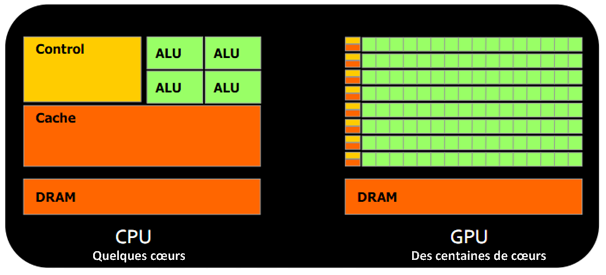
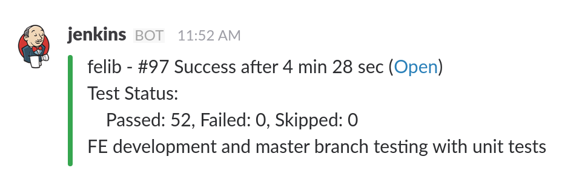
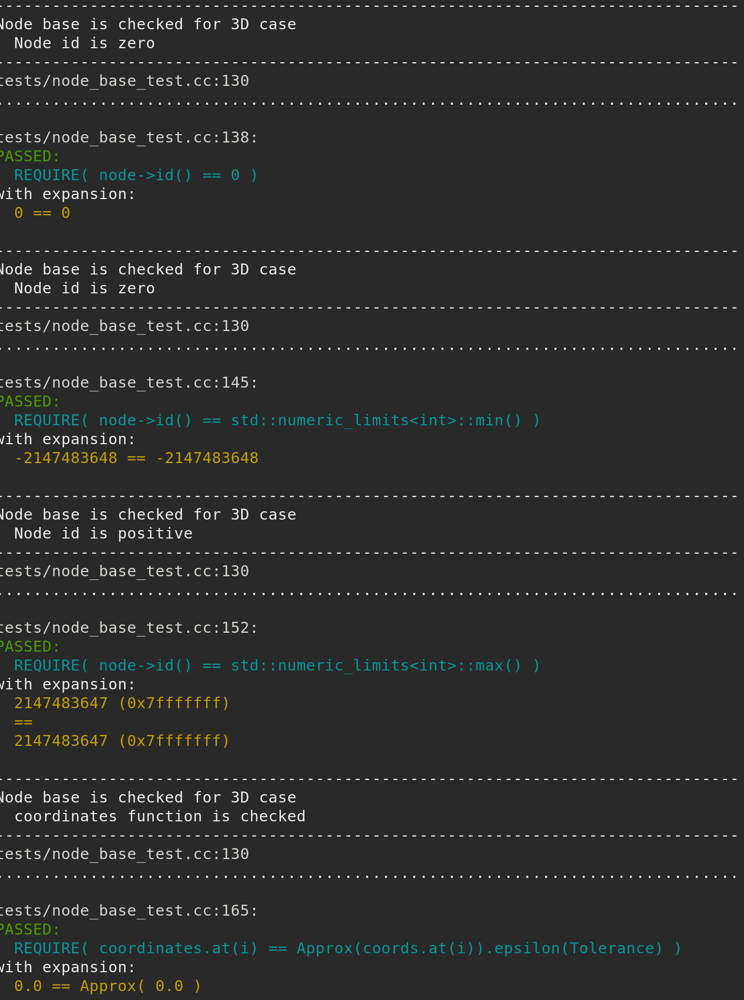
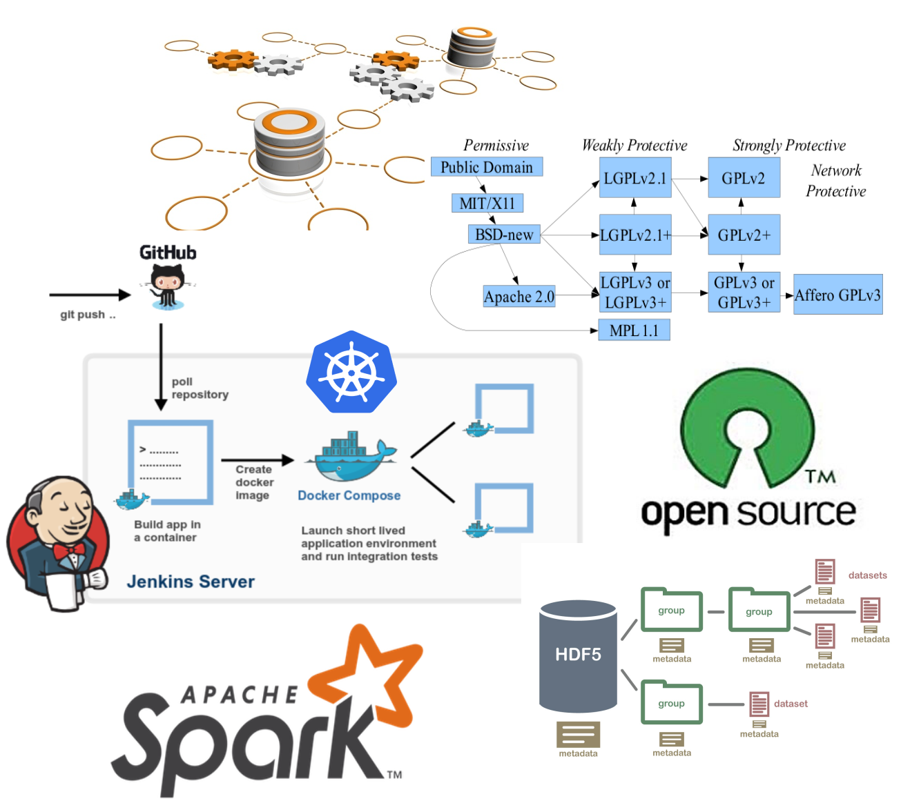

Computational Geomechanics
LBM-DEM, HPC, GPU, and Devops
Krishna Kumar, kks32@cam.ac.uk
University of Cambridge


ARO workshop on terrain modelling and simulation,
Chicago, IL. 17 - 18 August 2016.
Cambridge-Berkeley computational geomechanics
- Lattice-Boltzmann + Discrete Element Method
- Finite Element Method - Thermo-Hydro Mechanical Coupling
- Material Point Method
- Lattice Element Method

LBM - DEM simulation of granular collapse in fluid
aspect ratio 'a' of 6
Lattice Boltzmann - MRT

\[f_{i}(x + dx, t +\Delta t) - f_{i}(x, t) = -S_{\alpha i}(
f_{i}(x, t) - f_{i} ^ {eq}(x, t))\]
- $S_{\alpha i}$ is the collisional matrix.
- Probability density of finding a particle : $f(x,\varepsilon, t) $, where, x is position, $\varepsilon$ is velocity, and t is time.

LBM-DEM fluid-solid coupling

$$\Delta t_{s}=\frac{\Delta t}{\mathit{n}_{s}} \qquad (\mathit{n}_{s}=[\Delta t/ \Delta t_{D}]+1) $$
- At every fluid iteration, $\mathit{n}_{s}$ sub-steps of DEM iterations are performed using the time step $\Delta t_{s}$.
- The hydrodynamic force is unchanged during the sub-cycling.
LBM laminar & turbulent flows


Smagorinsky model (LES):
$\nu_{s}(x,t)=(C_s \Delta)^2\sqrt{S_{ij}S_{ij}} \mbox{ ; } S_{ij}=\frac{1}{2}(\frac{\partial u_i}{\partial x_j}+\frac{\partial u_j}{\partial x_i})$Karman Vortex Street
LBM-DEM implementation
- C-99 code
- OpenACC GPU version 2.0
- Visualisation VTK
- 2D LBM-DEM Code
- D2Q9 model for fluid
- Pressure and velocity boundaries
- Periodic boundary condition
- Multi-Relaxation Time for numerical stability
- Turbulence
- 2D discs
- Voronoi Tesselation in 2D/3D
- Cumulative $\beta$ distribution

CPU v GPU
LBM-DEM GPU implementation
// Assign to each OpenMP a different GPU
int n_gpus = acc_get_num_devices( acc_device_nvidia );
if( n_gpus )
acc_set_device_num( tid % n_gpus, acc_device_nvidia );
else
acc_set_device_type( acc_device_host );
#pragma acc parallel copyout( \
fhf1[0 : nbgrains], \
fhf2[0 : nbgrains], fhf3[0 : nbgrains]) \
copyin(obst[0 :][0 :], g[0 : nbgrains], \
ey[0 :], f[0 :][0 :][0 :], ex[0 :]), \
ey[0 :], f[0: ][y_start : y_end][0 :], ex[0 :])
LBM - DEM a = 0.8 & 10,000 partilces
- LBM Nodes = 50 Million : DEM grains = 10000 discs
- Real-time = 2 seconds
- Run-time = 4 hours
- Speedup = 25x on a Tesla K20
LBM-DEM multi-GPU implementation

Landslides: dissipation mechanism

Collapse in fluid: Set-up

Granular collapse in fluid: Effect of aspect ratio
aspect ratio 'a' of 0.4
aspect ratio 'a' of 4
Collapse in fluid: Effect of permeability
Reduction ‘R’=0.7r
Reduction ‘R’=0.9r
Collapse in fluid: Effect of permeability
Dirichlet boundary conditions constrain the pressure/density at the boundaries (Zou and He, 1997)$\rho_0=\sum_{a}f_{a} \mbox{ and } \textbf{u}=\frac{1}{\rho_0}\sum_{a}f_{a}$

Reduction in radius

Collapse in fluid: Effect of permeability
Reduction ‘R’=0.7r
Reduction ‘R’=0.9r
Collapse in fluid: Effect of permeability

Effect of permeability: stress
Effect of permeability: runout

Effect of permeability: kinetic energy

Effect of permeability: runout

Software development
- Git
- Continous integration
- Unit testing
- Container technology
Git
- Git is a distributed version control system that keeps track of your changes.
- Git only stores the ‘delta’, i.e., only the difference between the previous version and the current version, so it doesn’t take up lots of valuable hard disk space. Git also compresses your file
- GitHub, GitLab, BitBucket, ...

Continous Integration
- Builds: Multiple compilers and optimisations
- Unit testing
- Benchmarks
- Formatting - clangformat
- Coverage analysis
- Static analysis
- Continous delivery - Deployments

Unit testing
- Test every function
- Test for all possible values
- C++ unit testing frameworks:
- Catch
- Google mock test
- Boost unit test
All tests passed (36 assertions in 3 test cases)


Docker containers
- Automates the deployment of applications by packaging an application with all of its dependencies into software containers.
- Docker containers wrap up a piece of software in a complete filesystem that contains everything it needs to run: code, runtime, system tools, system libraries – anything you can install on a server.
- This guarantees that it will always run the same - Research reproducability

LBM - DEM: Road map
- Generic templatised C++11/14 code
- Live rendering of VTK using GPUs (inprogress)
- Multi-GPU support across nodes
- LBM:
- 3D LBM model
- 3D LB - DEM coupling
- Two-phase LBM fluid flow
- DEM:
- 3D DEM with different shapes
- DEM simulations on GPU
- Contact models for DEM
- Special boundaries for DEM
- Simulating billion DEM particles


Software development: Roadmap
- Opensource development
- Modular code development
- HDF5
- In memory databases
- Apache Spark - MapReduce
- Version control
- Unit testing
- Continous integration and deployment
- Docker container - Kubernetes

Thank you!!
Krishna Kumar, kks32@cam.ac.uk